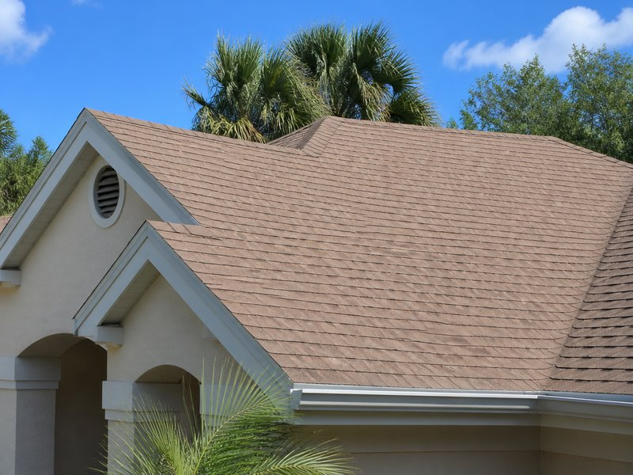

Roof Cleaning
Remove algae, black streaks, and organic buildup safely with soft wash roof cleaning that helps extend shingle life.
- Shingle-safe soft wash
- Algae, moss, and staining removal
- Roof brightening for better curb appeal
Dunedin roof cleaning specialists
Tampa Bay Power Clean delivers roof cleaning in Dunedin, FL, house washing in Dunedin, FL, and soft wash roof cleaning for homes and businesses across Dunedin, Clearwater, Palm Harbor, Largo, and Pinellas County.
Get a same-day quote for roof cleaning in Dunedin, FL and lock in a full exterior refresh plan for your home.
Core services
Roof cleaning in Dunedin, FL and house washing in Dunedin, FL are the highest-value services for local homeowners. Every detail on this page points buyers to roof cleaning, house washing, and same-house before and after proof.
Remove algae, black streaks, and organic buildup safely with soft wash roof cleaning that helps extend shingle life.
Refresh siding, trim, lanais, and exterior surfaces using gentle cleaning chemistry that removes mildew, pollen, and dirt.
 Before
Before

AfterEvery section is built to remove friction and answer the most important questions for Dunedin homeowners searching for roof cleaning, house washing, and soft wash services in Pinellas County.
How it works
The best Dunedin exterior cleaning pages reduce friction with a simple quote process, clear service explanation, and strong local intent around roof cleaning in Dunedin, FL and house washing in Dunedin, FL.
Tell us whether you need roof cleaning or house washing and share the property details for the right recommendation.
Share the Dunedin or Pinellas County location so we can confirm availability, timing, and the right equipment for the job.
Receive a free local estimate with a clear scope, pricing, and next steps — no confusing service bundles.
Service areas
This page is optimized for Dunedin searches while also supporting nearby markets like Clearwater, Palm Harbor, Largo, Safety Harbor, and broader Pinellas County roof cleaning demand.
Local authority
A strong local page uses clear proof, service focus, and a direct quote path to reduce hesitation and build confidence.
Local Dunedin inquiries get prompt attention and follow-up so homeowners know they are working with a responsive local team.
Safe cleaning methods are used on roofs, siding, trim, and exterior surfaces to avoid damage while restoring appearance.
The page avoids generic service overload and keeps the focus on the two highest-value offerings for this market.
FAQ
The answers are written to support local search intent, reduce hesitation, and move visitors toward a quote.
Yes. Tampa Bay Power Clean specializes in roof cleaning for Dunedin homes and businesses, removing algae, black streaks, and organic buildup with safe soft wash methods.
Yes. Our house washing process is designed to remove mildew, pollen, dirt, and grime from siding, trim, lanais, and exterior hard surfaces without harsh pressure.
Most local inquiries receive a quote or follow-up the same day. Call now or request a free quote through the page to get priority Dunedin scheduling.
Most Florida roofs benefit from professional cleaning every 1 to 3 years depending on shade, moisture, and algae growth. We can recommend a maintenance plan based on your roof condition.
Yes. Soft washing is designed to treat algae and buildup without high pressure that can damage shingles, granules, or roof surfaces.
Yes. Many homeowners schedule both services together to improve curb appeal and reset exterior surfaces in one appointment window.
We prioritize Dunedin and serve Clearwater, Palm Harbor, Largo, Safety Harbor, Tarpon Springs, and other Pinellas County communities for roof cleaning and house washing.
Ready for a cleaner roof and home?
Call now or request your free local quote and see why homeowners choose Tampa Bay Power Clean for roof cleaning in Dunedin, FL, house washing in Dunedin, FL, and trusted soft wash service across Pinellas County.